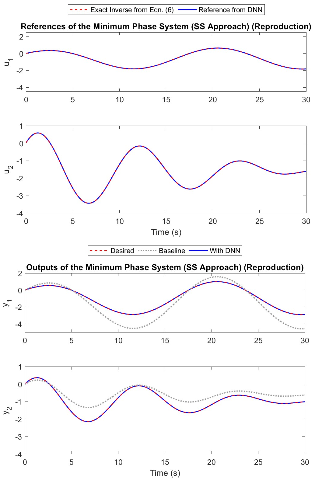
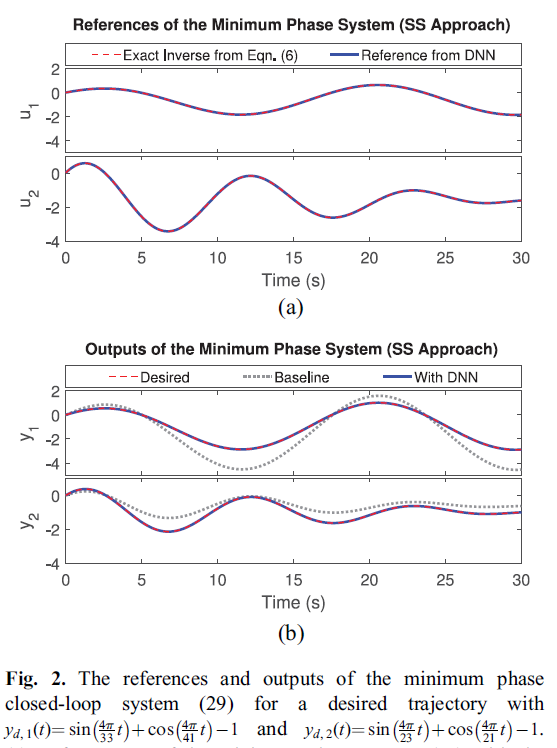
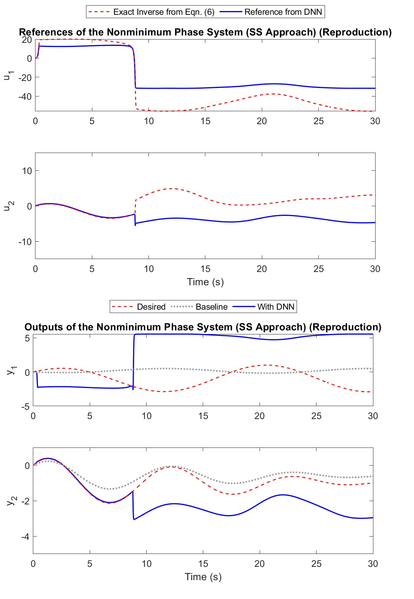
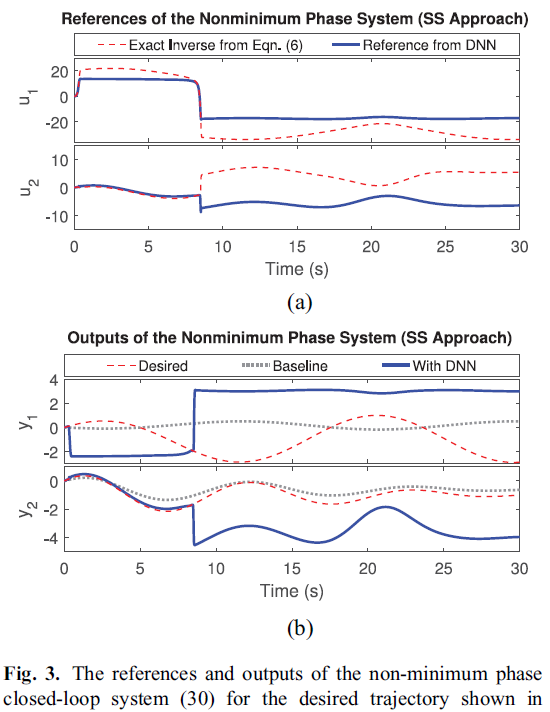
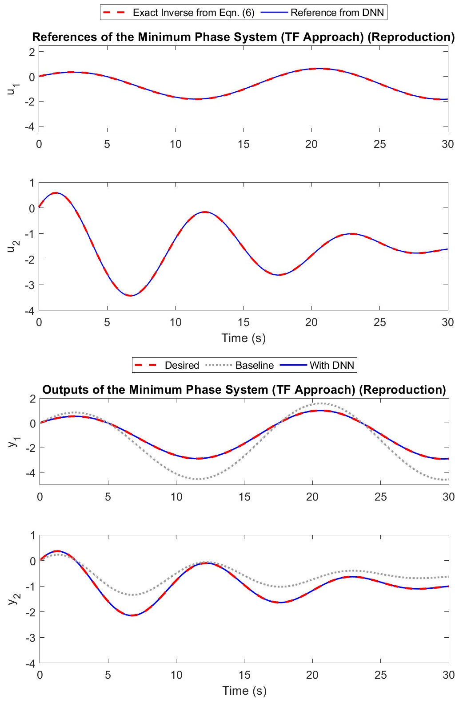
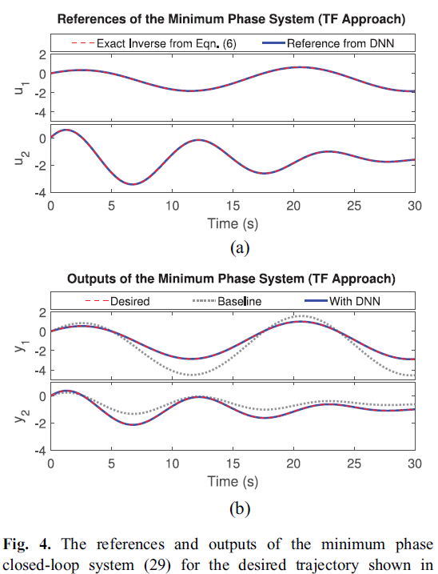
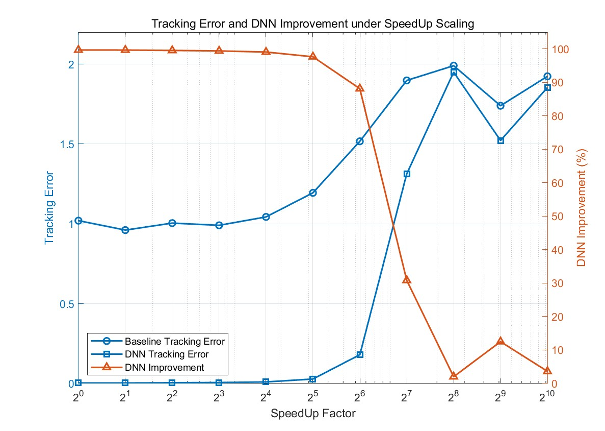
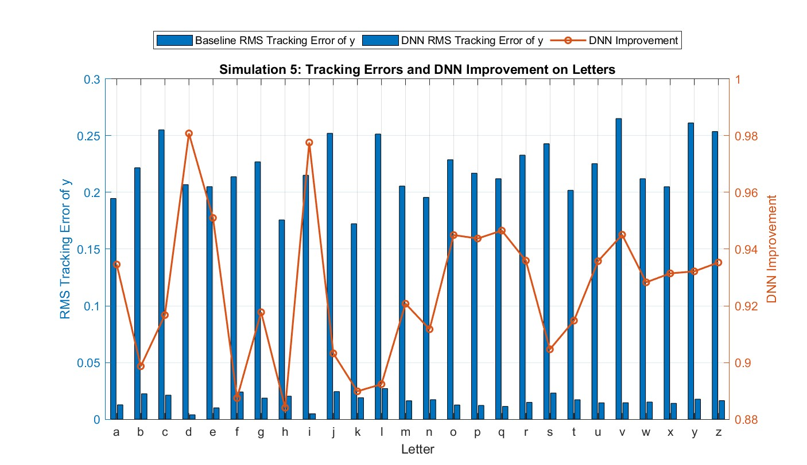

This project studies a DNN add-on framework for improving impromptu trajectory tracking. The main goal is to understand and reproduce the theoretical and simulation results in [1], with a focus on the inverse-dynamics interpretation of the DNN module, the related necessary conditions, and the input selection principles. Since the original quadrotor platform is hard to reproduce directly, this project focuses on simulation-based reproduction and further exploration. Section 5 of [1] is reproduced using MATLAB, and the results are highly consistent with those reported in the original paper. In addition, several extended simulations are conducted to examine the effect of input design, robustness to trajectory scaling, and generalization to hand-drawn letter trajectories. The results show that the DNN add-on can significantly reduce tracking error with low computational cost when the theoretical conditions are satisfied, while also revealing some practical boundaries of its robustness in extreme cases.
Trajectory tracking is an important problem in robotic control and has been widely applied in both industrial and civilian domains. Some examples include high-precision robotic manipulators and unmanned aerial vehicles, such as quadrotors, for search and rescue. In this project, we reproduce the study in reference [1], which investigates a particular setting of this problem, referred to as impromptu trajectory tracking.
The core idea of [1] is to use a DNN as an add-on module placed before a stabilized baseline control system to improve impromptu trajectory tracking. In accordance with the proposal and practical constraints, the project mainly consists of three parts.
In [1], the baseline system is modeled as a multi-input multi-output system. Eq. (1) is a linear time-invariant model. The state-space model is:
Here, the nonnegative integer \(k\) is the discrete-time index, \(x \in \mathbb{R}^{n}\) is the system state, \(u \in \mathbb{R}^{m}\) is the reference signal or control input, and \(y \in \mathbb{R}^{m}\) is the system output. The matrices \(A\), \(B\), and \(C\) are constant matrices.
The nonlinear version of Eq. (1) is given in Eq. (2). Its state-space model is:
We reproduce the simulation presented in Section 5 of [1] to illustrate Insights 4.1, 4.2, and 4.3. Two linear MIMO baseline closed-loop systems are considered, with the same state equation as below.
It is not hard to see that the matrix \(A\) of the baseline system is upper triangular, so its eigenvalues are its diagonal entries. Moreover, since all these eigenvalues lie inside the unit circle, they correspond to three stable poles. The output equations of the two systems are defined in Eq. (29) and Eq. (30), respectively.
The training set consists of 25 sinusoidal trajectories with different combinations of amplitudes and frequencies. The amplitudes are randomly selected from the range 1 to 5, and the frequencies are randomly selected from 0.024 to 1.25 Hz.
The DNN modules are fully connected feedforward networks with two hidden layers, where each hidden layer consists of 20 hyperbolic tangent activation units.
Once the DNN modules are trained, we evaluate the DNN-enhanced system's performance by testing it on a new trajectory that was not included in the training set:
Our objective is to train the DNN modules to approximate the inverse dynamics of the baseline systems. In the first set of simulations, the state space approach, corresponding to Insight 4.2, is examined.
The references and outputs of the DNN-enhanced tracking for system (29) and system (30) are shown in Figures 2 and 3, respectively, with our reproduction placed on the left and the original figures from [1] on the right for reference. For the minimum phase system (29), the RMS modeling error of the DNN module is \(8.86 \times 10^{-5}\). The RMS tracking errors of the baseline system, using the desired trajectory as reference input, and the DNN-enhanced system are 1.02 and \(2.96 \times 10^{-5}\). These results show that the DNN module designed according to Insight 4.2 is able to approximate the exact inverse equation of the system with high accuracy, thereby achieving approximately exact tracking.




In the second set of simulations, we focus on the transfer function approach, corresponding to Insight 4.3, for the minimum phase system (29).
The DNN-enhanced system is evaluated on the same testing trajectory as that used in Simulation 1. The RMS modeling error of the DNN module is \(9.84 \times 10^{-3}\). The RMS tracking errors of the baseline system and the DNN-enhanced system are 1.02 and \(3.31 \times 10^{-3}\). These results shown in Figure 4 illustrate that the transfer function approach can also be used to enhance the tracking performance of the minimum-phase system, while avoiding the need for full state information required by the state-space approach.


Resuming from Section V.B, Simulation 2, we modify the original model by decreasing and increasing the orders of both \(u\) and \(y\) by one, respectively, and observe the resulting changes in the tracking error. The corresponding inputs become:
It should be noted that, since the predicted variable is \(u(k)\), it cannot be included in the input. The results are shown in Table III.
| Case | Input Dimension | Training RMSE | Validation RMSE | Control RMSE | Baseline Tracking Error | DNN Tracking Error |
|---|---|---|---|---|---|---|
| Decrease \(y\) and \(u\) by One Order | 8 | \(4.8 \times 10^{-3}\) | \(4.7 \times 10^{-3}\) | \(1.8 \times 10^{-2}\) | 1.0 | \(6.3 \times 10^{-3}\) |
| Original | 12 | \(4.9 \times 10^{-3}\) | \(5.1 \times 10^{-3}\) | \(9.8 \times 10^{-3}\) | 1.0 | \(3.3 \times 10^{-3}\) |
| Increase \(y\) and \(u\) by One Order | 16 | \(1.1 \times 10^{-2}\) | \(1.1 \times 10^{-2}\) | \(3.7 \times 10^{-2}\) | 1.0 | \(1.4 \times 10^{-2}\) |
First, we can see that the original version achieves the best tracking performance, while either increasing or decreasing the order by one worsens the result. This indicates that the original window length is the most appropriate, and the theoretical prediction is correct.
Second, reducing the order by one causes less performance drop than increasing the order by one. This suggests that redundant information does not help. In contrast, the input model in paper [2] indeed contains many redundant high-order terms. Therefore, it is understandable why paper [1] can reduce the input dimension by two-thirds while still achieving better performance.
Finally, we can also see that the model with one order reduced has a better RMSE on the validation set than on the testing set, but its actual tracking performance is poor. This may be due to model oversimplification or random effects.
As part of the study of generalization ability, [1] uses a scaling method to examine whether changes in velocity affect tracking robustness. They conclude that, when the speed increases from 0.1 m/s to 0.8 m/s with a step size of 0.1 m/s, corresponding to an eightfold increase, the tracking error of the baseline model increases by about one time, while the proposed model remains robust.
Here, we apply scaling to the frequency in order to achieve an equivalent increase in velocity. Specifically, we introduce:
to simulate the speed increase. The results are plotted in Figure 5.

Similar to [1], the DNN add-on still shows strong robustness when \(\text{speedUpFactor} \leq 32 = 2^5\). Since the baseline model in this simulation is already poor enough, although its performance also becomes worse as the speed increases, the change is not as obvious as that in [1].
Due to the physical speed limit of the quadrotor, it is practically impossible to conduct a 100- to 1000-fold speed increase in real experiments. This simulation suggests that the DNN add-on module may be more robust to scaling than expected.
Another worth mentioning observation is that the scaling boundary found in this simulation seems to appear around \(\text{speedUpFactor}=64\text{--}128\). At this point, the higher-frequency desired trajectory \(y_{d,2}(t)\) is accelerated from 0.091 Hz to about 5.8--11.6 Hz, while our sampling frequency is 70 Hz. According to the Nyquist--Shannon sampling theorem, the theoretical upper limit should be close to \(70/2=35\) Hz. At this stage, we do not have a satisfactory explanation for this phenomenon.
We hope that this discussion can extend the robustness analysis in the original paper [1] and further identify the boundary of such robustness.
Finally, we test whether the model in Section V.B, Simulation 2 can demonstrate generalization ability on variable-velocity hand-drawn trajectories, as a response to the entire Section 6 of [1]. The hand-drawn trajectories consist of the 26 lowercase English letters, drawn with a mouse and recorded as data. The duration is normalized to 30 s, while the trajectory length is normalized and translated to the center.

The simulation results in Figure 6 show that the DNN add-on reduces the tracking error by an average of 92.6% compared with the baseline, with a standard deviation of 2.5%, a minimum reduction of 88.4% for letter \(h\), and a maximum reduction of 98.1% for letter \(d\). These results indicate that the DNN add-on module exhibits good generalization ability on unseen, variable-velocity trajectories.
In this project, we reproduced and analyzed the DNN add-on framework proposed in [1] for impromptu trajectory tracking. The theoretical part was reviewed in detail. The simulation results in Section 5 were also successfully reproduced. Further simulation-based exploration confirms the good generalization ability of the DNN add-on module. The robustness under extreme conditions was discussed and remained an open question. Overall, this project supports the main conclusion of [1]: a theory-guided DNN add-on design can improve tracking performance effectively while keeping the framework relatively simple and economical.
The author would like to thank Professor Mo Chen and the teaching assistants for their support and suggestions throughout the project. Their guidance helped the author better understand the scope and direction of the report. The author is also grateful that the course selected such a rich and meaningful paper, which provided both theoretical depth and practical insights.